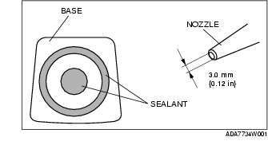
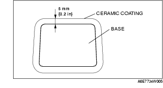

Base installation
1. Cut away all of the original sealant using a razor.
2. Clean and degrease the ceramic coating on the glass and the base.
- • Keep the area free of dirt and grease, and do not touch the surface. Otherwise, the primer may not properly bond to the surface of the glass.
3. Apply primer to the bonding area of the glass and the base.
4. Use only glass primer on the glass, and body primer on the base. Allow the primer to dry for approx. 30 min.
5. Apply 3.0 mm {0.12 in} layer of sealant to the base.

6. Center the base in the ceramic coating and press it onto the glass.

7. Use isopropyl alcohol to remove any excess repair sealant.
Hardening time of sealant
8. Install the rearview mirror.